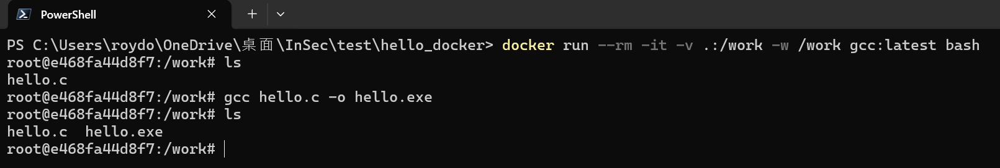
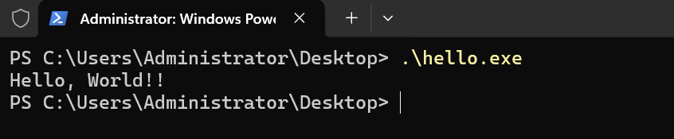
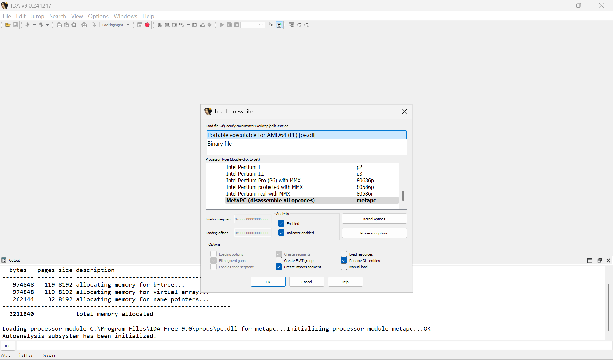
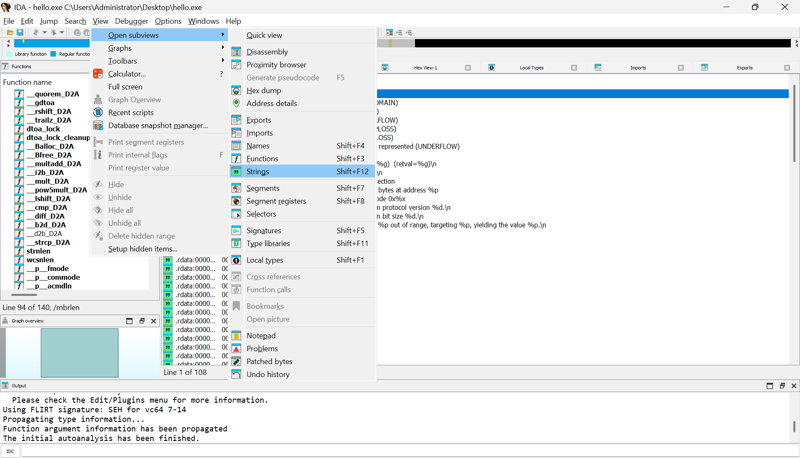
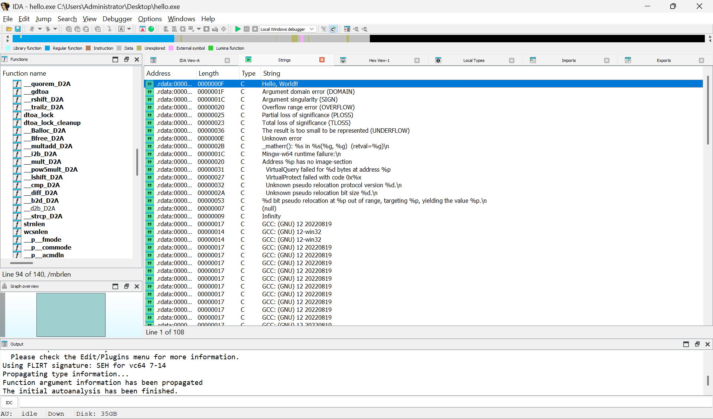
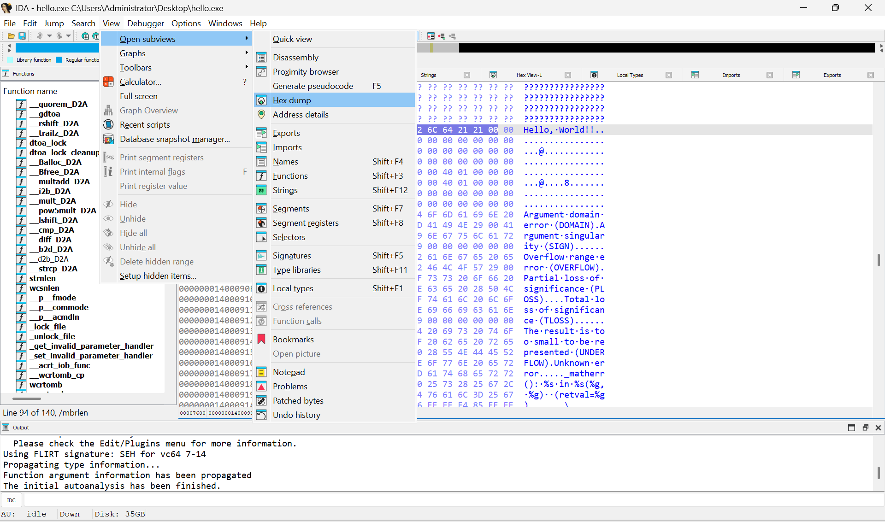
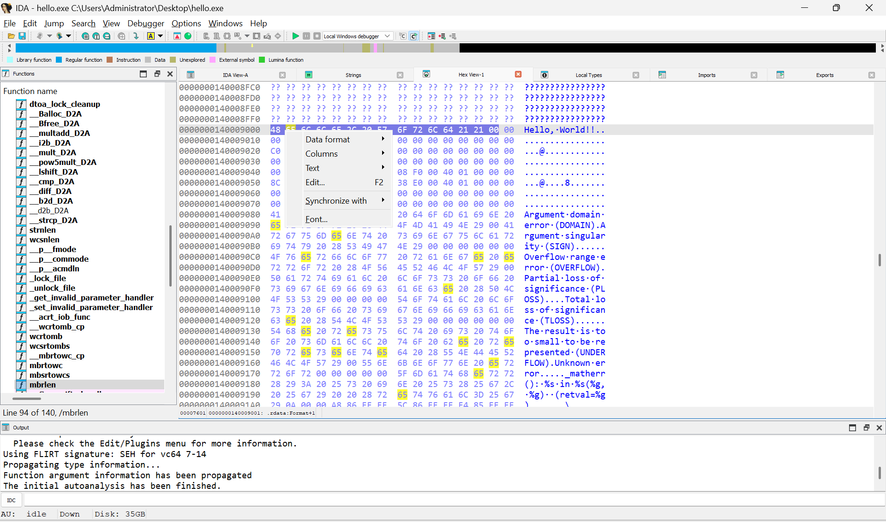
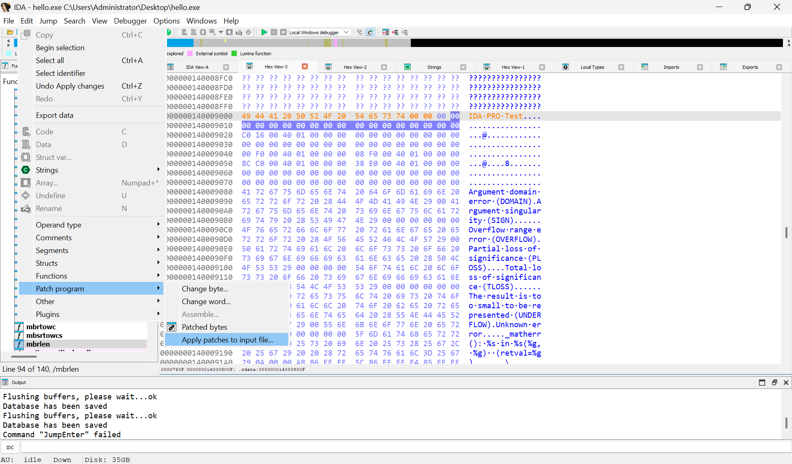
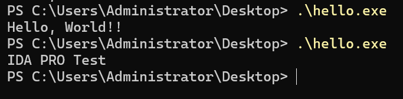

前言
這篇文章紀錄
IDA PRO軟體，分析Hello World的過程。
在本練習中，我們將對 Hello.exe 檔案進行分析、修改的行為。
實驗環境
- Windows 11 ( IDA PRO )
使用工具
- IDA PRO
非必須Docker ( 準備 hello world 代碼 )
1. 📝 Hello World !! 程序
- 建立
hello.c檔案
1 |
|
- 使用 Docker 指令

1 | # 使用 Docker 對該資料進行映射，映射後資料夾全部內容都會被拉進容器內 |
- 查看執行結果是否正常

2. 📝 IDA PRO Analysis
- 使用 IDA PRO 打開 exe

- 至 Strings 找到 Hello World 字樣 (
Shift + F12)




1 | # IDA PRO Test |


結論
- 透過本次的練習，我們成功利用 IDA Pro 找到並修改可執行檔案 (hello.exe) 內的字串，將 “Hello, World!” 替換為 “IDA PRO Test”。